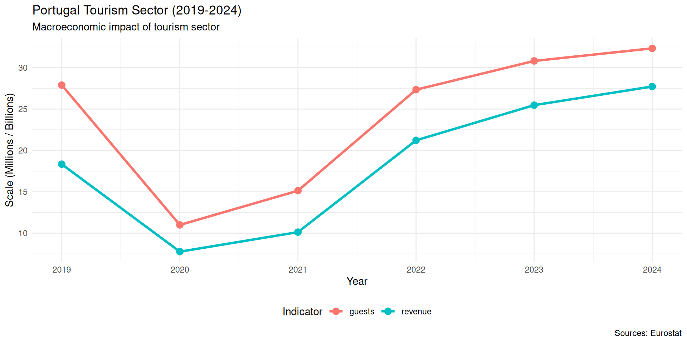
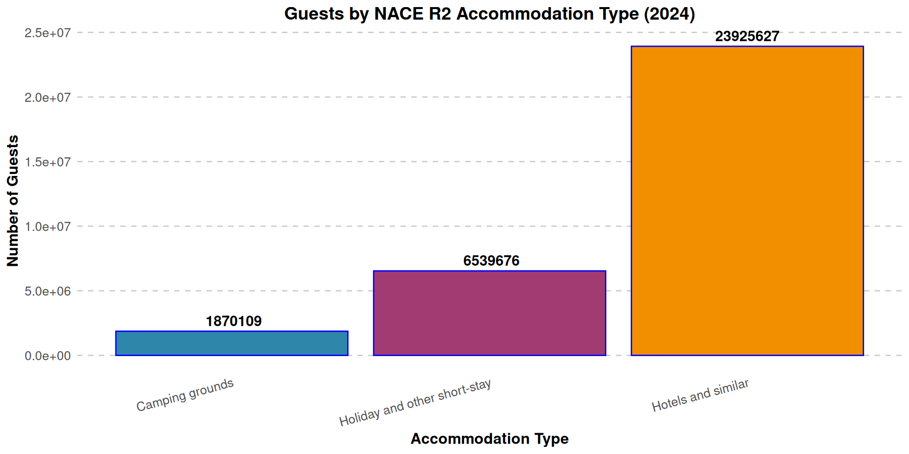
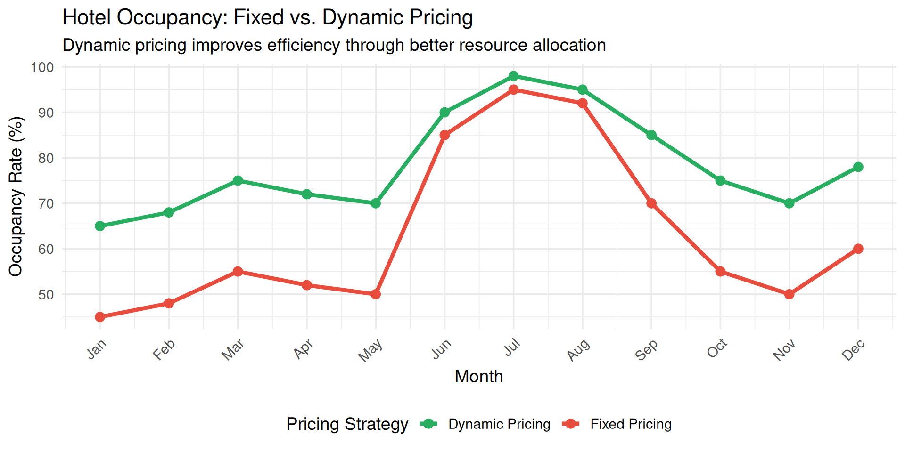

Economics Fundamentals
Lecture 1: Introduction, Macro vs Micro, Scarcity and Efficiency
Paulo Fagandini
2026
Welcome to Economics! 👋
Why study Economics? 🤔
🏛️ Understand government policies
🌐 Navigate global markets
💼 Achieve business success
📈 📉 Master supply & demand
⚖️ Understand inequality

Introduction 👨🏫
👨🏫 Paulo Fagandini
📧 paulo.fagandini@ext.universidadeeuropeia.pt
🎓 In Canvas: Syllabus, Calendar, Group Project
📆 Schedule: Thursdays & Fridays
What is Economics? 💡
Economics studies how societies use scarce resources to produce valuable goods and distribute them among individuals.
Economics as a social science uses simplified hypotheses and relates variables to understand economic phenomena.
What Does Economics Study? 🔍
🏦 Institutions & Markets
How technology influences prices and resource allocation
💸 Finance
Behavior of financial markets and capital flows
👥 Society
Income redistribution and social welfare
📉 Cycles
Unemployment, inflation, growth
The Two (main) Branches of Economics
Macroeconomics 🔭
The Big Picture — Studies the economy as a whole
📈 GDP & Economic Growth
💼 Unemployment rates
💰 Inflation trends
🏦 Monetary policy
🌐 International trade
🧾 Government budgets
Example: “Why did Portugal’s tourism revenue fall 50% in 2020?”
Microeconomics 🔬
Individual Decisions — Studies specific agents and markets
🛒 Consumer behavior
🏭 Firm decisions
🏷️ Pricing strategies
⚔️ Competition analysis
🤝 Market interactions
💹 Supply & Demand
Example: “How should a hotel set its room prices?”
Macroeconomics in Tourism ✈️
Source: Eurostat (tour_occ_arnraw, bop_its6_det)
Microeconomics in Tourism 🏨
Source: Eurostat (tour_occ_arnraw)
The Fundamental Economic Problem ⚠️
Scarcity
Human wants are unlimited, but resources are limited
This leads to:
👉 Trade-offs — Choices involve compromises
👉 Cost-Benefit Analysis — Act only if benefits exceed costs
👉 Efficiency — Most effective use of resources
Scarcity in Tourism: Lisbon Airport 🛫
Capacity Constraints (2024)
⚠️ Design capacity: ~31M passengers/year
✈️ Actual 2024: ~35M passengers
📈 Growing demand, limited slots
Trade-off: More flights vs. congestion & delays
Hypothetical illustration based on news reports
Efficiency 🎯
Economic Efficiency
Situation where the economy produces and consumes goods at socially optimal levels:
✅ Getting the most out of available resources
✅ Using the least for current consumption level
Pareto Efficiency ⚖️
Cannot increase one person’s welfare without harming another
✔️ Efficient allocation
- Resources fully utilized
- No waste in production
- Optimal distribution
❌ Inefficient allocation
- Resources underutilized
- Production waste exists
- Room for improvement
Efficiency in Tourism 🏨
Dynamic Pricing Example
The Three Economic Questions ❓
Every economy must answer:
| Question | Description | Tourism Example |
|---|---|---|
| WHAT? | What goods to produce? | More hotels or museums? |
| HOW? | How to produce them? | Automated or human agents? |
| FOR WHOM? | Who gets the output? | Luxury or mass tourism? |
These require decisions based on: resources, technology, preferences, markets
Positive vs. Normative Economics 🔎
Positive Economics 📊
Describes facts — Can be tested
- Why do managers earn more than cleaners?
- Does tourism increase local incomes?
- What happens to prices in high season?
👉 Answered with data and analysis
Normative Economics 💭
Value judgments — Opinions
- Should government limit Airbnb?
- Should tourism revenue be redistributed?
- Should airlines reduce emissions?
👉 Requires ethical/political debate
Key Concepts Summary 📋
| Concept | Definition |
|---|---|
| Economics | Study of scarce resource allocation |
| Macroeconomics | Whole economy (GDP, inflation) |
| Microeconomics | Individual decisions (firms, consumers) |
| Scarcity | Unlimited wants, limited resources |
| Efficiency | Optimal resource use (no waste) |
| Trade-off | Giving up one thing for another |
Exercises 📝
Time for practice!
Let’s test your understanding.
Exercise 1: Multiple Choice
Which of the following is a MACROECONOMIC question?
A. How should a hotel set its room prices?
B. Why did Portugal’s tourism revenue fall in 2020?
C. Should a restaurant hire more waiters?
D. How do travelers choose between two airlines?
Answer: B — Portugal’s tourism revenue is an aggregate measure affecting the entire economy.
Exercise 2: Multiple Choice
A museum has limited exhibition space. Choosing between a modern art or historical exhibition illustrates:
A. Efficiency
B. Scarcity
C. Positive economics
D. Macroeconomics
Answer: B — Limited space (scarce resource) forces a choice between alternatives.
Exercise 3: Open Question
Scenario: A low-cost airline charges €50/ticket, sells 150 tickets (capacity: 180).
Questions:
Calculate current revenue per flight
If price increases to €60, demand falls to 120 tickets. Calculate new revenue.
Which pricing is more efficient? Why?
Is this microeconomic or macroeconomic analysis?
Exercise 3: Solution
a) Current revenue: \[\text{Revenue} = 50 \times 150 = €7,500\]
b) New revenue: \[\text{Revenue} = 60 \times 120 = €7,200\]
c) Efficiency:
- €50 price: Revenue €7,500, occupancy 83%
- €60 price: Revenue €7,200, occupancy 67%
👉 First is more efficient: higher revenue AND better utilization
d) This is microeconomic analysis (individual firm’s decision)
Next Lecture 📚
Lecture 2 (February 6, 2026):
- Three Fundamental Economic Problems (detailed)
- Market, Centralized, and Mixed Economies
- Economic Systems Comparison
💡 Preparation: Think about how tourism businesses make decisions in different economic systems!
Thank You! 👋
Questions?
📧 paulo.fagandini@ext.universidadeeuropeia.pt
Next class: Friday, February 6, 2026

Economics of Tourism | Lecture 1